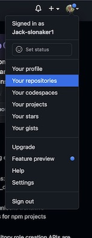

How to create a webpage using Github!
1- Create a free github account
2- Look in the upper right side of the screen. You should see you photo or profile picture. Click on it to open a dropdown menu and click on your repositories

3- Click the green button that says new.
4- Name your repository and scroll down to the bottom and hit create repository.
5- Now you will need to upload files to your repo. Click on the button that says upload an existing file.
7- Create your files you would like to upload.
8- Drag and drop the existing files into your repository and hit commit changes.
9- Now if you search your repo name in google your site will come up